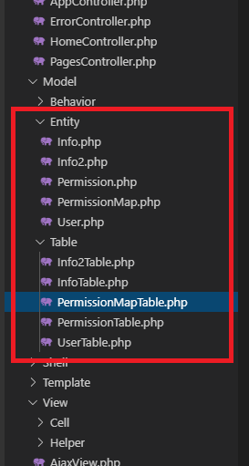
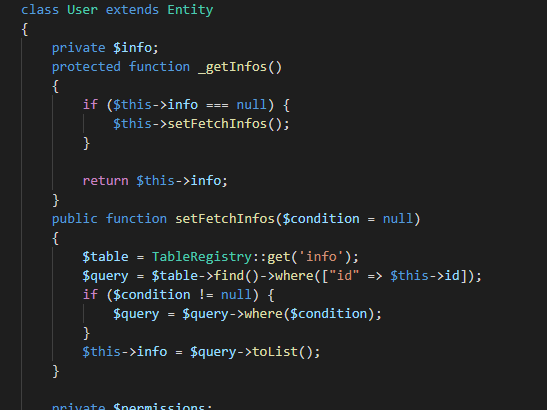
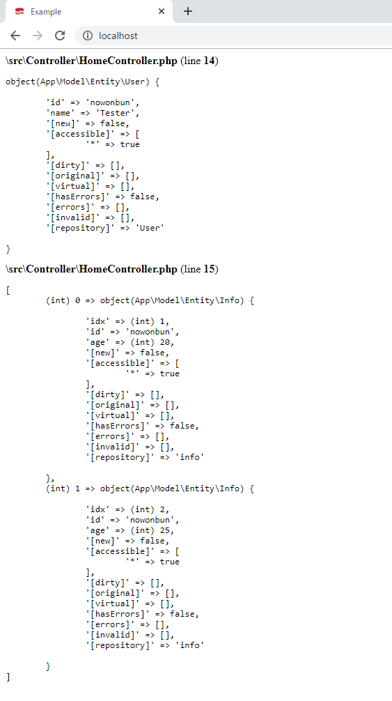
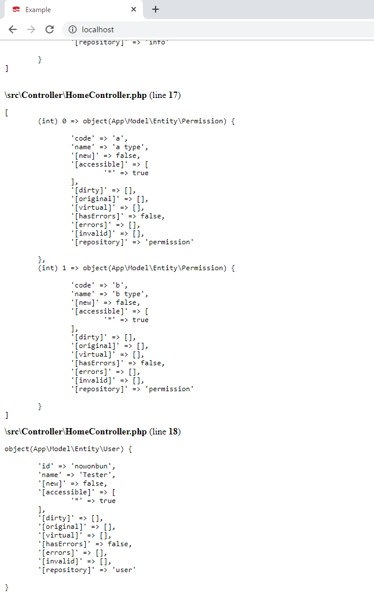

こんにちは。明月です。
この投稿はPHPのCakeフレームワークでORMのテーブルFetch設定に関する説明です。
以前にはCakePHPでORM Query式でデータ検索することに関して説明しました。
link - [CakePHP] Cakeフレームワークでデータベースに接続する時に使うQuery式とEntityクラス、Tableクラス、ResultSet
ORM FetchとはテーブルでReferenceされたテーブルのデータを連結することです。例えば、Userテーブルに派生テーブルInfoがあり、InfoテーブルでUserテーブルのIDをForeign keyで結ばれたと思えば、プログラムからUserテーブルを検索するとInfoテーブルのデータもリストタイプに検索される機能です。
1:1の関係ならクラス内部で一つのインスタンスで変数に派生テーブルデータがあり、1:n関係ならリストタイプでデータがあります。
JavaのORMでも同じ概念で説明したことがあります。
link - [Java] JPAのEntityクラス設定(Cascade, fetch)
テストのため、データベースにテーブルを新しく生成しましょう。
-- ユーザテーブル(キーはid)
create table user(
id varchar(255) not null,
name nvarchar(255) not null,
primary key(id)
);
-- ユーザ派生テーブルのinfoテーブル 1:n関係
create table info(
idx int not null auto_increment,
id varchar(255) not null,
age int not null,
primary key(idx),
-- ユーザテーブルのキーをidカラムにreferenceした。
foreign key(id) references user(id)
);
-- info派生テーブルのinfo2テーブル 1:n関係
create table info2(
idx int not null auto_increment,
info_idx int not null,
birth date,
primary key(idx),
-- infoテーブルのキーをinfo_idxカラムにreferenceした。
foreign key(info_idx) references info(idx)
);
-- user派生テーブルのpermissionテーブル、m:n関係
create table permission(
code char(4) not null,
name varchar(255) not null,
primary key(code)
);
-- userテーブルとpermissionテーブルをm:n関係に作るマップ
create table permission_map(
id varchar(255) not null,
code char(4) not null,
foreign key(id) references user(id),
foreign key(code) references permission(code)
);
-- ユーザテーブルにidが「nowonbun」をinsertする。
insert into user values('nowonbun', 'Tester');
-- infoテーブルにユーザテーブルのキー「nowonbun」で２つデータをinsertする。
insert into info (id,age)values('nowonbun', 20);
insert into info (id,age)values('nowonbun', 25);
-- permissionテーブルに２つデータをinsertする。
insert into permission values('a','a type');
insert into permission values('b','b type');
-- ユーザテーブルのキー「nowonbun」のデータをpermissionのキー「a」に連結する。
insert into permission_map values('nowonbun','a');
-- ユーザテーブルのキー「nowonbun」のデータをpermissionのキー「b」に連結する。
insert into permission_map values('nowonbun','b');

テーブルの生成が完了したらCakePHPにもTableクラスとEntityクラスを生成します。

CakePHPの機能ではFetch機能でJoinを利用してデータを取得する方法にもあります。
link - https://book.cakephp.org/3/ja/orm/retrieving-data-and-resultsets.html#changing-fetching-strategies
でも、Joinを利用する方法はすごく複雑です。Entityクラスで処理することじゃなく、Controllerで$table->find()関数を利用してデータを取得することに紹介しています。
ORMでデータを組み込むことじゃなく、Controllerがデータによって複雑に実装することだけです。
それでFetch設定をしてデータを取得するように実装しました。
link - [CakePHP] Cakeフレームワークでデータベースに接続する時に使うQuery式とEntityクラス、Tableクラス、ResultSet
<?php
namespace App\Model\Entity;
use Cake\ORM\Entity;
use Cake\ORM\TableRegistry;
// UserテーブルのFetch設定する。
class User extends Entity {
// infoテーブルのreferencesデータの変数
private $infos;
// $インスタンス->infos(プロパティ)で呼ばれる関数
protected function _getInfos() {
// flyweightパターン
if ($this->infos === null) {
// 変数にデータを設定する。
$this->setFetchInfos();
}
return $this->infos;
}
// infosの変数にデータを設定する。
public function setFetchInfos($condition = null) {
// infoテーブルのレジストリを取得する。
$table = TableRegistry::get('info');
// Userテーブルの「id」で「info」テーブルを取得する。
$query = $table->find()->where(["id" => $this->id]);
// 条件を入れる。
if ($condition != null) {
$query = $query->where($condition);
}
// 検索する。
$this->infos = $query->toList();
}
// permissionテーブルのreferencesデータの変数
private $permissions;
// $インスタンス->permissions(プロパティ)で呼ばれる関数
protected function _getPermissions() {
// flyweightパターン
if ($this->permissions === null) {
// 変数にデータを設定する。
$this->setFetchPermissions();
}
return $this->permissions;
}
// permissionの変数にデータを設定する。
public function setFetchPermissions($condition = null) {
// permissionMapテーブルのレジストリを取得する。
$table = TableRegistry::get('permissionMap');
// Userテーブルの「id」で「permissionMap」テーブルを取得する。
$query = $table->find()->where(["id" => $this->id]);
// 条件を入れる。
if ($condition != null) {
$query = $query->where($condition);
}
// 結果を取得する。
$maplist = $query->toArray();
$this->permissions = [];
// mapの結果からpermissionインスタンスを入れる。
foreach ($maplist as $item) {
array_push($this->permissions, $item->permission);
}
}
}

一応、permissionは後で説明して上のinfoだけ確認します。
<?php
namespace App\Controller;
use Cake\ORM\TableRegistry;
class HomeController extends AppController {
public function index() {
// Userテーブルのレジストリを取得する。
$table = TableRegistry::get('User');
// query式を取得する。
$query = $table->find();
// 条件でidは「nowonbun」ということを検索する。
$query = $query->where(['id' => 'nowonbun']);
// データを取得する。
$user = $query->first();
// データを確認する。
debug($user);
// userテーブルのinfosプロパティデータを確認する。
debug($user->infos);
//debug($user->permissions);
//debug($user->infos[0]->user);
}
}

infosのプロパティのデータを確認すればUserテーブルから連携されたinfoのデータが表示されますね。
Userテーブルを検索すればinfoテーブルを検索しなくても、Userテーブルで連結されてデータがあることです。
上の例をみればpermissionMapを検索してpermissionのデータを検索すればpermissionデータがあることです。
<?php
namespace App\Model\Entity;
use Cake\ORM\Entity;
use Cake\ORM\TableRegistry;
// PermissionMapテーブルのFetch設定する。
class PermissionMap extends Entity {
// userテーブルのreferencesデータの変数
private $user;
// $インスタンス->user(プロパティ)で呼ばれる関数
protected function _getUser() {
// flyweightパターン
if ($this->user === null) {
// 変数にデータを設定する。
$this->setFetchUser();
}
return $this->user;
}
// userの変数にデータを設定する。
public function setFetchUser($condition = null) {
// Userテーブルのレジストリを取得する。
$table = TableRegistry::get('user');
// Userテーブルのidキーによって検索する。
$query = $table->find()->where(["id" => $this->id]);
if ($condition != null) {
$query = $query->where($condition);
}
// 検索する。
$this->user = $query->first();
}
// permissionテーブルのreferencesデータの変数
private $permission;
// $インスタンス->permission(プロパティ)で呼ばれる関数
protected function _getPermission() {
if ($this->permission === null) {
// 変数にデータを設定する。
$this->setFetchPermission();
}
return $this->permission;
}
// permissionの変数にデータを設定する。
public function setFetchPermission($condition = null){
// permissionテーブルのレポジトリを取得する。
$table = TableRegistry::get('permission');
// Permissionテーブルのcodeキーによって検索する。
$query = $table->find()->where(["code" => $this->code]);
if ($condition != null) {
$query = $query->where($condition);
}
// 検索する。
$this->permission = $query->first();
}
}
permissionMapテーブルも同じパターンでidはUserテーブル、codeはPermissionテーブルに連携しています。
なので、UserテーブルでpermissionMapを取得してpermissionプロパティを呼出しすればpermissionデータが検索されることです。
<?php
namespace App\Controller;
use Cake\ORM\TableRegistry;
class HomeController extends AppController {
public function index() {
// Userテーブルのレジストリを取得する。
$table = TableRegistry::get('User');
// query式を取得する。
$query = $table->find();
// 条件でidは「nowonbun」ということを検索する。
$query = $query->where(['id' => 'nowonbun']);
// データを取得する。
$user = $query->first();
// データを確認する。
debug($user);
// userテーブルのinfosプロパティデータを確認する。
debug($user->infos);
echo "<br />";
// 当該なUserのPermissionデータを取得
debug($user->permissions);
// userデータのinfoのデータのユーザデータを取得する。
// Fetchの繰り返し、infoのデータにもuserテーブルがFetchされるのでuserとuser->info[0]->userは同じデータ
debug($user->infos[0]->user);
}
}

上のことを実はすべてJoinして検索したことじゃなく、キーによって再検索するタイプなのでパフォーマンスを少し落ちる可能性があります。
でも、可読性が直感なのでプログラムを作成して管理することでは楽だと思います。
CakePHPはTableクラスで自由にクエリを組み込むができるので必要なら別途でクエリを作成する方もいい方法だと思います。
ここまでPHPのCakeフレームワークでORMのテーブルFetch設定に関する説明でした。
ご不明なところや間違いところがあればコメントしてください。
- [CakePHP] Errorページを設定する方法2020/02/20 03:00:00
- [CakePHP] Transactionを使う方法とEntityクラスを利用してInsert、Update、Deleteする方法2020/02/19 03:00:00
- [CakePHP] ORMのテーブルFetch設定2020/02/18 03:00:00
- [CakePHP] Cakeフレームワークでデータベースに接続する時に使うQuery式とEntityクラス、Tableクラス、ResultSet2020/02/17 08:16:23
- [CakePHP] データベース(MariaDB(Mysql))を接続する方法2020/02/14 03:00:00
- [PHP] namespaceとuse2020/02/13 03:00:00
- [CakePHP] RequestとResponseに関して2020/02/12 03:00:02
- [CakePHP] PHPのCakeからAjax要請がある時、jsonタイプ(json_encode関数)でResponseする方法とControllerでViewを選択する方法2020/02/08 03:00:00
- [CakePHP] MVCフレームワークのCakeをインストールする方法2020/02/07 03:00:02
- [PHP] 自動require及びincludeをする方法(spl_autoload_register)2020/02/05 03:00:00
- [Java] 59. Spring bootのJPAでEntityManagerを使い方2022/02/25 18:27:48
- [Java] 58. EclipseでSpring bootのJPAを設定する方法2022/02/23 18:11:10
- [Java] 57. EclipseでSpring bootを設定する方法2022/02/22 19:04:49
- [Python] Redisデータベースに接続して使い方2022/02/21 18:23:49
- [Java] Redisデータベースを接続して使い方(Jedisライブラリ)2022/02/16 18:13:17
- [C#] Redisのデータベースを接続して使い方2022/02/15 18:46:09
- [CentOS] Redisデータベースをインストールする方法とコマンドを使い方2022/02/14 18:33:07
- [Design pattern] 3-6. ステートパターン(State pattern)2021/11/17 20:04:47
- [Design pattern] 3-5. メメントパターン(Memento pattern)2021/11/16 20:01:36
- [Design pattern] 3-4. イテレータパターン(Iterator pattern)2021/11/15 19:31:28
- [CentOS] Linux環境(CentOS)でCassandra(NoSQL DB)をインストールする方法(DBeaverブラウザでNoSQL使い方)2021/11/12 17:33:58
- [Design pattern] 3-3. コマンドパターン(Command pattern)2021/11/05 17:01:42
- [Window] apache-tomcatでロードバランシング(Load balancing)する方法とセッションクラスタリング（セッション共有）2021/11/05 16:58:45
- [Window] Apacheでmod_jkとmod_proxyの差異、apacheでtomcatのwebsocketのプロキシフォーワードする方法2021/11/05 16:55:05
- [PHP] Apache環境の同じホスト中でPHPとJava(Servlet)を同時に起動、運用する方法2021/11/05 16:52:04